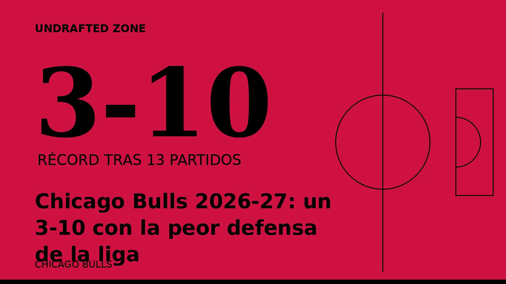

Chicago Bulls 2026-27: un 3-10 con la peor defensa de la liga
Chicago Bulls abre 2026-27 con un 3-10 y recibe 125,9 puntos por partido, el peor dato de la liga. Powell sostiene el ataque; la defensa es la gran pregunta.

Chicago Bulls llega a mitad de noviembre con un 3-10, decimocuarto del Este y con la peor defensa de la liga: recibe 125’9 puntos por partido, la cifra más alta de los treinta equipos. Con datos de ESPN y la verificación de Basketball-Reference, la pregunta de esta guía no es si el equipo puede competir con su ataque, que anota 114’6 y está en la mitad alta de la liga, sino si una plantilla joven puede cerrar el agujero defensivo antes de que la temporada se le escape.
Un 3-10 con una defensa que no aguanta
El saldo de los Bulls es de -11’3 puntos por noche. La diferencia la explica casi por completo la defensa: anotan lo suficiente para competir en muchos partidos, pero conceden tanto que los rivales llegan a los últimos minutos con margen de sobra. En Toronto cayeron por 92-135, la derrota más abultada de la temporada, y en Nueva York por 105-135.
Las tres victorias llegaron ante Milwaukee (132-125), Atlanta (125-117) y Minnesota (117-106). Las dos últimas están en la ventana reciente: el 13 de noviembre ganaron en casa a Atlanta y el 14 se impusieron en Minnesota, antes de caer el 16 en Cleveland por 115-126. La defensa, en cualquier caso, no ha sido suficiente para sostener los partidos: la tercera victoria llegó con 125 puntos recibidos.
Norman Powell, la referencia ofensiva
Norman Powell es el jugador que más carga con el ataque. Empieza los once partidos que ha disputado, juega 29’5 minutos y promedia 21’6 puntos, 2’9 rebotes y 2’2 asistencias, con un 45’9% en tiros de campo y un 32’4% en triples. Su eficiencia es sólida para el volumen que maneja, y en un equipo que anota menos de 115 puntos por noche, su aportación es la que sostiene el marcador.
El riesgo de depender de Powell es el mismo que el de cualquier referencia de 33 años: el equipo necesita que el resto de la rotación anote cuando él descansa. Por eso el reparto de la producción es la primera cuestión que la temporada tiene que resolver.
Caleb Wilson, el rookie que se perdió el tramo de noviembre
Caleb Wilson es la pieza más prometedora de la plantilla y la que más se ha notado en su ausencia. Empezó los diez partidos que disputó, juega 30’8 minutos y promedia 18’9 puntos y 6’2 rebotes, con un 42’0% en tiros de campo y un 32’4% en triples. Es un ala que combina anotación y rebote, y en un equipo que concede tanto, su capacidad para anotar en transición es de lo que más falta.
La baja llegó el 12 de noviembre por una lesión en la mano. Según el parte de Shams Charania, citado en la página de lesiones consultada, Wilson estará fuera entre cuatro y seis semanas. Si la fecha se cumple, volvería entre el 10 y el 24 de diciembre, con la defensa todavía sin arreglar.
Giddey y Buzelis: la creación y el perímetro
Josh Giddey es el base que reparte el juego. Juega los trece partidos como titular, promedia 8’5 asistencias, 9’9 puntos y 5’2 rebotes en 28’1 minutos, con un 40’7% en tiros de campo y un 32’0% en triples. Su cifra de asistencias es la más alta de la plantilla, y el equipo depende de él para que sus ataques terminen en buena posición.
Matas Buzelis es el otro titular de la rotación exterior. Empieza los trece partidos, juega 27’2 minutos y aporta 14’4 puntos y 4’7 rebotes, con un 45’0% en tiros de campo y un 35’3% en triples. Es un alero que ha ganado peso en la temporada, y su eficiencia desde la distancia le da al quinteto una amenaza que los rivales tienen que marcar.
Jalen Smith, Tre Jones y el banquillo
Jalen Smith es la pieza más sólida del poste. Empieza doce partidos, juega 24’9 minutos y promedia 13’3 puntos y 8’1 rebotes, con un 52’6% en tiros de campo y un 36’1% en triples. Su presencia en la pintura y su tiro de media distancia le dan al equipo una alternativa real a la defensa del poste, aunque el balance del equipo deja claro que todavía no basta.
Tre Jones es el mejor del banquillo en producción. Juega los trece partidos desde la suplencia, con 19’2 minutos, 10’9 puntos y 3’2 asistencias, y un 31’3% en triples. Su papel de base de rotación le da al equipo control de posesión cuando Giddey descansa. Buddy Hield, aporta 7’2 puntos y un 39’0% en triples en once partidos desde la suplencia, y es el tirador exterior más fiable del banquillo.
Isaac Okoro empieza cinco partidos y aporta 6’8 puntos con un 22’2% en triples, mientras que Leonard Miller, Essengue y Jordan Hawkins completan una rotación en la que ninguno tiene todavía un papel fijo. Es un banquillo con recursos, pero que hoy no tiene una segunda unidad que aguante la defensa cuando entra.
Bajas y dudas de la semana
Esta semana hay dos nombres en la lista de bajas. Tobe Awaka está descartado para el partido del miércoles contra Brooklyn por molestias en la espalda, y Patrick Williams figura como probable por una lesión en un dedo. Williams juega seis partidos con 22’7 minutos de media y promedia 7’8 puntos, con un 36’8% en triples, así que su vuelta aportaría minutos de ala en un equipo que los necesita.
Caleb Wilson sigue fuera, y eso deja la rotación de ala y de poste con menos piezas de lo que el entrenador quisiera. Ninguna de las dos bajas es grave por sí sola, pero juntas explican por qué el banquillo todavía no tiene una forma clara.
Un calendario que pide ganar algo
Los siete partidos siguientes son el primer tramo de la temporada con rivales que están a su alcance. El miércoles 18 visitan a Brooklyn, y después reciben a Washington el viernes 20, a Denver el domingo 22 y a Cleveland el lunes 23. El tramo sigue con una visita a Charlotte el miércoles 25, la recepción a Indiana el sábado 28 y el partido contra New York el martes 1 de diciembre.
Son cinco partidos en casa y dos fuera, y los rivales son equipos que se pueden ganar. Eso hace de este tramo un buen termómetro: si los Bulls cierran al menos dos o tres de esos partidos, la lectura del 3-10 cambia. Si pierden los que tienen en casa por márgenes de dos dígitos, el problema será estructural.
Qué significa un arranque así para un equipo de este perfil
Un 3-10 tiene dos lecturas, y la diferencia entre ellas se decide en la defensa. La primera es la de la transición: un equipo joven, con un rookie lesionado, una rotación que cambia cada semana. La segunda es la del problema estructural: un equipo que recibe 125 puntos por partido no tiene un plan defensivo que funcione, y las bajas no lo explican todo.
Creo que la defensa es la clave. Los Bulls anotan 114’6 puntos, un número que da para competir, así que el problema no está en el ataque. Si la defensa baja de 120 puntos recibidos en las próximas semanas, la temporada seguirá siendo una transición larga. Si el equipo consigue cerrar los partidos con menos de 115, la lectura cambia por completo.
Para entender cómo se llegó a esta plantilla, nuestro repaso del verano de los Bulls sirve de punto de partida, y el repaso de sus movimientos de agencia libre explica cómo se armó la rotación actual. La historia de la temporada, por ahora, sigue viviendo en la pista.
Qué mirar en las próximas semanas
Hay tres preguntas que decidirán la temporada de Chicago. La primera es si la defensa mejora contra Brooklyn y Washington, dos rivales que se pueden ganar. La segunda es cuándo vuelve Caleb Wilson y qué papel tiene cuando regrese, porque su ritmo de anotación sería una pieza clave en el ataque de segunda unidad. La tercera es si Giddey y Powell reparten la creación sin que el equipo dependa de una sola noche.
Con trece partidos, cualquier conclusión es provisional, y una buena racha de tres o cuatro partidos bastaría para cambiar la lectura de todo el arranque. Esta pieza se actualizará cuando cambien las cifras y el estado de las bajas, y el aviso de «Actualizado» indicará la fecha.
Preguntas frecuentes
¿Cuál es el balance de los Bulls en 2026-27?
Tres victorias y diez derrotas tras trece partidos, decimocuartos del Este.
¿Quién es el máximo anotador del equipo?
Norman Powell, con 21’6 puntos por partido.
¿Quién reparte más asistencias?
Josh Giddey, con 8’5 por partido. Tre Jones promedia 3’2.
¿Cuándo es el próximo partido?
El miércoles 18 de noviembre, a domicilio contra Brooklyn.
¿Por qué no aparecen salarios?
Porque esta pieza se centra en la rotación y el rendimiento, y no hay cifras salariales que se puedan contrastar con la misma solidez que las estadísticas. Para entender cómo encajan los contratos en el tope, nuestra guía sobre el tope salarial, la luxury tax y los aprons es el punto de partida.